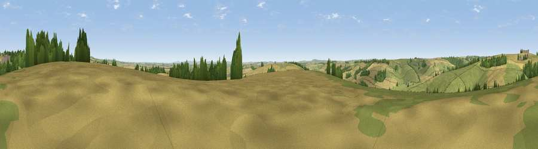

Viewpoint near Godmanstone
#19151 in England · top 44% of its area beats it · near GodmanstoneThe view, rendered

A 360° render of this exact spot computed from the terrain model, tree cover and land cover — summer colours, afternoon light, calibrated against photographs of famous viewpoints. Real trees, hedges and buildings will differ in detail.
The panorama
Grey silhouette: terrain skyline in each direction (720 bearings, Earth curvature and refraction included). Dashed green: skyline with trees (+15 m) and buildings (+8 m) as obstacles. Blue strip: how far the ground is visible on each bearing.
Where the view opens
Wedge length = distance to the farthest visible ground on that bearing (vegetation-aware). Rings at 10, 25 and 50 km.
What fills the view
46% cropland · 44% grassland · 9% woodland ·
Angular shares of the visible panorama (visual magnitude), not map area. Landscape diversity 0.43 (0–1 Shannon).
Key numbers
More beautiful places nearby
The staircase of upgrades: each row has a higher view potential than everything closer. Driving times are estimates from straight-line distance, calibrated against real road routing — check an actual route before setting out.
| Place | Direction | Drive | Score |
|---|---|---|---|
| Viewpoint near Godmanstone | SSW · 1 km | ~4 min | 54.1 |
| Viewpoint near Cerne Abbas | N · 2 km | ~4 min | 59.6 |
| Viewpoint near Cerne Abbas | N · 3 km | ~6 min | 59.9 |
| Watts Hill [Giant Hill] | N · 4 km | ~10 min | 67.5 |
| Lyscombe Hill | ENE · 7 km | ~14 min | 70.5 |
| Viewpoint near Hilfield | NNW · 7 km | ~15 min | 71.6 |
| Viewpoint near Woolland | NE · 11 km | ~21 min | 74.5 |
| Viewpoint near Upwey | S · 13 km | ~24 min | 77.6 |
50.79261, -2.45431 · source: screening · position refined by local search. Computed location — check access rights before visiting.